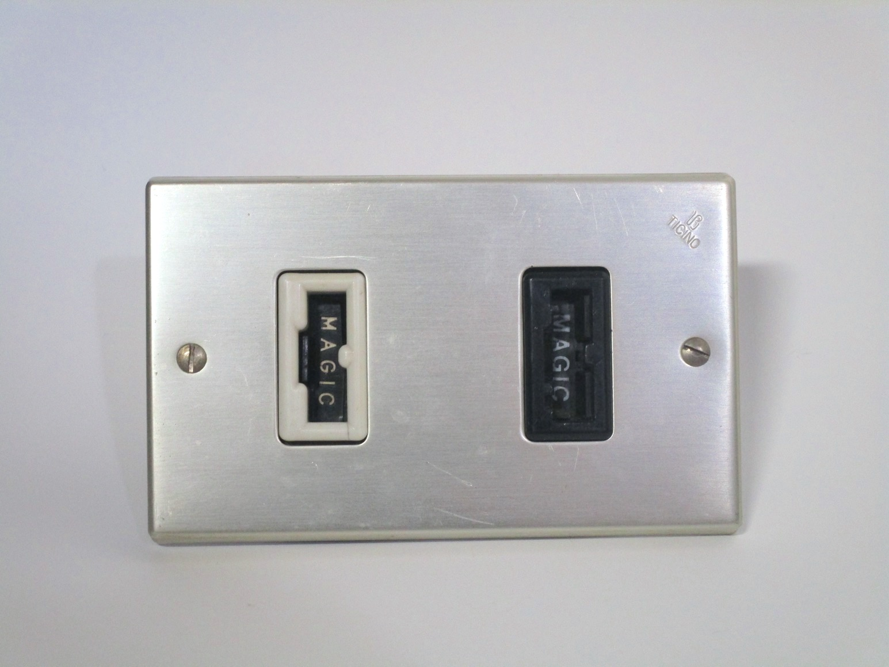
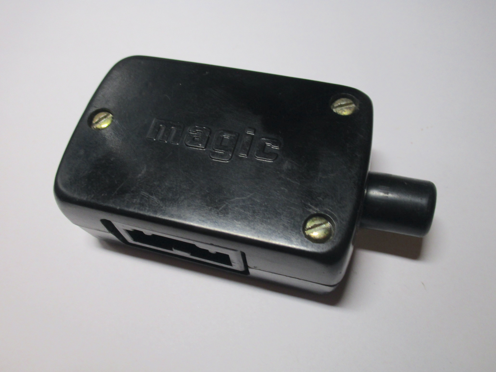
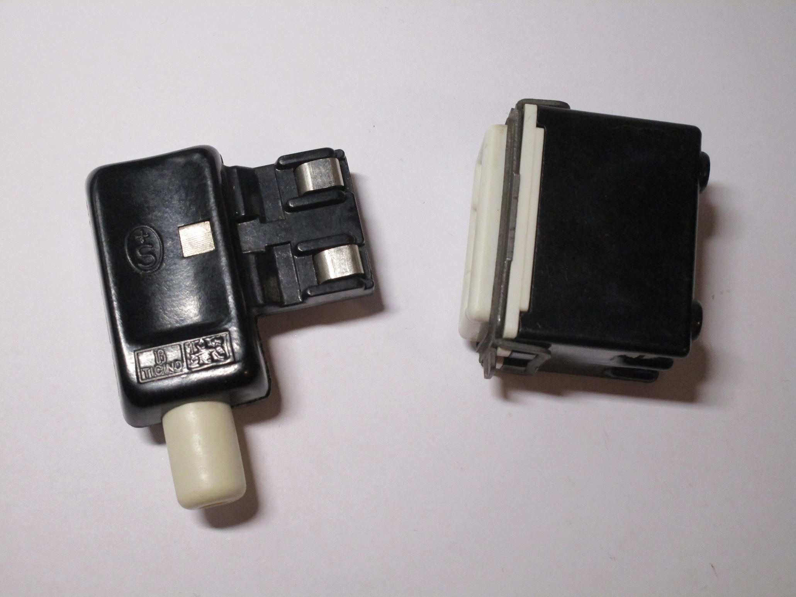

The BTicino "Magic" safety plugs and sockets
In the 60s, the plug and socket system used
in Italy at the time was considerably dangerous: plugs didn't have sleeved pins, which made it easy to receive a
shock, and the sockets didn't have any sort of shutters.
Due to this, there was an increasing dissatisfaction, and the Italian company BTicino - the most popular manufacturer
of electrical devices at the time - tried to design a replacement which would fix those issues.
Thus, the "prese e spine di sicurezza" - safety plugs and sockets - were created. More commonly, however, they were known as the Magic plugs, as they were created as part of the famous modular system, and each socket had the word "MAGIC" on the front cover.
These plugs were extremely safe for the time, and indeed are arguably even more safe than the ones used nowadays. The plugs were polarised, and designed in such a way that made it impossible to touch any live contacts, while the sockets had a special type of shutter system which was very difficult to defeat.
However, Magic plugs were a failure - no appliances were sold with them, thus requiring the user to rewire them. Adaptors were also available, but obviously defeated the safety features. Additionally, their higher price limited xtheir adoption to higher end installations. Over time, standard Italian plugs and sockets also adopted some of these safety features, such as shutters and sleeved pins, which negated the benefits of using the Magic plugs even further.
10A Magic plug and socket
Rating: 10A 250V
Of the four different types of Magic plugs and sockets released, the 10A ones were by far the most popular. As previously mentioned, these plugs were very safe: instead of using conventional pins like in every other standard, they used a plastic piece with contacts on the side, which couldn't be touched when the plug was energised.
The socket had a single shutter on the front with a very peculiar mechanism, which made it impossible to insert anything other than a matching plug, thus preventing electric shocks.
{kind=link}


16A Magic socket
Rating: 16A 250V
16A sockets were also available - this one was placed inside a special enclosure made for use with extension cords.
Compared to 10A ones, 16A sockets have some special notches on them: the first one prevents, as expected, the use of 16A plugs in 10A sockets. The second one, however, is more strange, as it prevents the use of 10A plugs. While this may seem strange, this is exactly the same behaviour as in standard Italian plugs of the time. Later 16A sockets changed this, and made it possible to use either type of plug.
 {kind=link}
{kind=link}

Be careful - they're not phone sockets!
The "Magic" plugs and sockets, due to their very unusual appearance, are often confused with a few different types of
phone plugs. One of them is the French one, which is larger and has a T shape.
Even more confusingly, BTicino also had its own separate phone plug connector, which did in fact look very
similar to the irreversible safety plugs. Its adoption was fairly limited, however.
{kind=link}
{kind=link}
{kind=link}